WILD TOURISTS
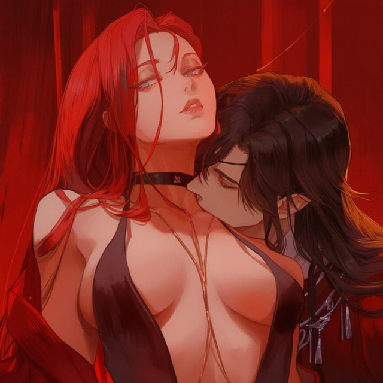
Проект: WILD TOURISTS
Задать вопрос о пресете: @tavernobot
Отдельная благодарность: Лине и всему админ составу туристов,
XyL[i]gaN4eG🍎 t.me/YablochnyAI за гениальные идеи в разработках пресетов и сайта,
Шиночке t.me/ah_ah_shino4ka и Aster/a/ t.me/waitwhosastera за их невероятно полезные проекты и лучшие пресеты,
соавтору пресета Джи за помощь и поддержку в тестировании пресета и промптов
/// ВАЖНЫЕ_ФАЙЛЫ
/// ДОП_ФАЙЛЫ
/// ССЫЛКИ_НА_ГЕНЕРАЦИЮ_ИЗОБРАЖЕНИЙ
Локал
Расширение для SillyTavern, ловит теги генерации в сообщениях ИИ и генерирует картинки через API
sillyimages/// БАЗА_ДАННЫХ_ПРОМПТОВ
Тыкните на блок для копирования описания
ЖАНРЫБЕЗОПАСНО
ФЕТИШИНСФВ
ГЛОБАЛЬНЫЕ РП ИЗМЕНЕНИЯПОЧТИ НСФВ
/// ЛОГ_ОБНОВЛЕНИЙ
v8.0.0 - Глобальное обновление
Переработан и оптимизирован каждый модуль. Добавлены инфоблоки для отслеживания персонажей и состояния сюжета; ассистент Селеста (а-ля Селия из пресета Селии или Ренетт из Яблочного)
v7.0.1 - Фикс
Исправлены мелкие грамматические ошибки. На сайт добавлен регекс для тех, у кого не скачался
v7.0.0 - Release
Глобальное обновление пресета. Переработаны почти все промпты, удалено лишнее
v1.0 - v666
Предыдущие версии пресета (можно найти на канале)
Начало разработки
/// ГАЙД_ПО_ПРЕСЕТУ
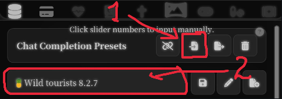
Установка пресета
Скачайте файл WildTourists.json с сайта и импортируйте его в SillyTavern, нажав указанную на скрине кнопку (1). Далее выберите пресет из списка доступных (2). После этого пресет готов к использованию на поддерживающих размышления моделях, так как в нем уже включены все основные функции
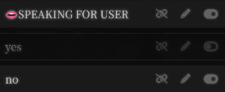
Настройка разрешения писать за юзера
Активируйте ТОЛЬКО ОДИН из вариантов.
1. yes - бот будет писать как за себя, так и за вас. Вы можете либо отвечать как обычно, либо отсылать "..."
2. no - бот будет писать строго за персонажей, вы полностью контролируете юзера
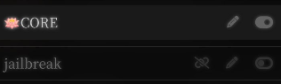
Ядро пресета и jailbreak
1. CORE - ядро пресета, где прописаны самые базовые правила. Оно должно быть включено всегда.
2. jailbreak - теоретически может помогать с проблемами цензуры, но есть большая вероятность, что это просто плацебо, поэтому включайте ТОЛЬКО если очень сильно начинается цензура. Для jailbreak нужен Regex (скачайте из раздела ДОП_ФАЙЛЫ)
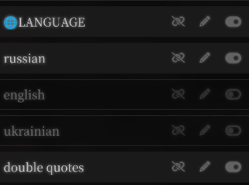
Смена языков
Переключение между русским, английским и украинским языками, включать только один из трех вариантов. double quotes - устанавливает двойные кавычки "вот так" для речи, иначе чаще всего боты пишут с помощью "-"
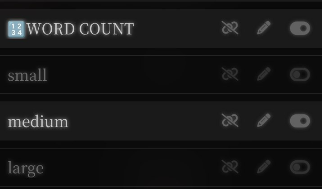
Смена длины сообщения
Переключение между коротким (200 - 250 слов), средним (600 - 700 слов) и длинным (900 - 1000 слов). Выбирать один вариант
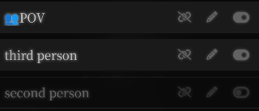
Смена POV
Переключение между вторым лицом (повествование будет описывать юзера местоимением "ты") и третьим лицом (юзер будет описываться как он/она). Включать только один вариант
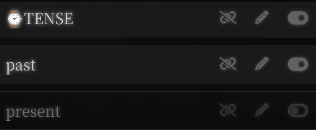
Смена времени (прошедшее/настоящее)
Переключение повествования между прошедшим временем (будет описано так, будто это уже произошло) и настоящим (описание сцены так, будто она происходит в данный момент)
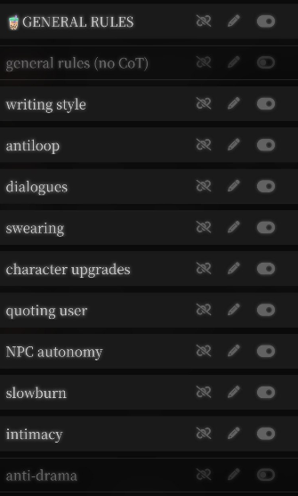
Основные правила
1. general rules (no CoT) - см. пункт Настройка для GPT
2. writing style - общий промпт на качественный стиль письма, обязателен
3. antiloop - запрет на повторяющуюся структуру сообщения, обязателен
4. dialogues - общий промпт на улучшение диалогов, обязателен
5. swearing - увеличивает количество матов в речи персонажей, опционален
6. character upgrades - общий промпт на улучшение поведения персонажей и их реакций, обязателен
7. quoting user - запрет на переспрашивание/цитирование слов юзера в речи бота, обязателен
8. NPC autonomy - добавляет в сюжет нпс и их личную жизнь, опционален
9. slowburn - строгое разделение отношений на стадии для их медленного и логичного прогресса, опционален
10. intimace - правила на 18+ сцены с ботом + случайный шанс беременности при незащищенном сексе, опционален, если вы не ролите интимные сцены
11. anti-drama - сводит к минимуму драму в сценах, опционален
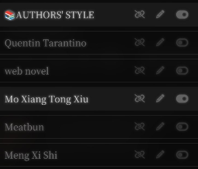
Авторские стили
Адаптирует стиль письма под известных авторов. Включать только один вариант:
1. Quentin Tatantino - бот будет писать абсурдные диалоги на отвлеченные темы перед вспышками гипертрофированного экшена. Ожидайте кинематографичный стиль с акцентом на черный юмор, рваный темп повествования и нецензурную лексику
2. web novel - не конкретный автор, скорее сборка правил для просто хорошей новеллы. Текст станет динамичным, без лишних метафор. Фокус сместится на внутренние противоречия персов, быструю смену действий
3. Mo Xiang Tong Xiu - повествование будет строиться на скрытом напряжении, где за вежливыми диалогами скрывается буря подавленных эмоций и недопониманий. Бот станет использовать изящные природные метафоры, резкие эмоциональные качели и описывать душевную боль через реальные физические страдания
4. Meatbun - стиль обретет мрачную, болезненную фиксацию на уязвимости и физических страданиях персонажей. Ожидайте удушающе тяжелый текст, где любовь граничит с жестокостью, а эмоции описываются через унижение, боль и почти одушевленное влияние окружающей среды
5. Meng Xi Shi - бот превратит сцену в холодную интеллектуальную шахматную партию, где эмоции скрыты за железной волей и безупречным этикетом. Текст будет отличаться элегантной сдержанностью, кинематографичными замедлениями времени в пылу боя и построением отношений исключительно через психологическое противостояние и сарказм
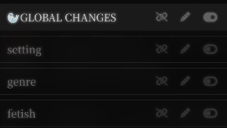
Глобальные промпты
В эти разделы нужно вставить соответствующие промпты из раздела БАЗА_ДАННЫХ_ПРОМПТОВ:
1. setting - глобальный сеттинг мира (омегаверс, русреал и т.д). Брать в разделе Глобальные РП изменения
2. genre - жанр ролевой, под который будет адаптироваться сцена (fluff, romance, smut и т.д). Брать в разделе Жанры
3. fetish - тут очевидно. Можно либо дать нейронке решить, какие фетиши должны быть у персонажей, либо вручную прописать имена персонажей и через дефиис их фетиши. Список некоторых фетишей брать в разделе Фетиши
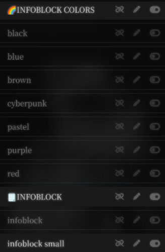
Инфоблок
1. infoblock - генерирует красивый блок для отслеживания развития сюжета, персонажей в сцене, их расписания и слухов
2. infoblock small -примерно тот же функционал, но без оформления, занимает минимум места и скрывается нажатием
3. INFOBLOCK COLORS - цвета infoblock, не применимы к infoblock small. Выбирать ТОЛЬКО, если включен infoblock и ТОЛЬКО один вариант
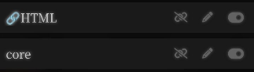
Генерация изображений
Генерирует страницу комикса с изображениями. Оригинальный промпт взят из тгк Шиночка (https://t.me/ah_ah_shino4ka) и слегка переделан. Для работы нужно получитть доступ к nano banana через расширение локала, подключив к нему NAISTERA (в разделе /// ССЫЛКИ_НА_ГЕНЕРАЦИЮ_ИЗОБРАЖЕНИЙ)
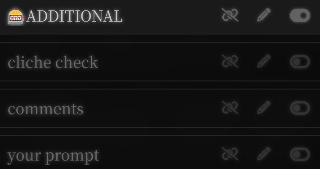
Дополнительно
Небольшие дополнительные функции, всё опционально:
1. cliche check - в размышлениях выявляет клише в сцене и заменяет их
2. comments - добавляет несколько комментариев от разных юзеров, которые выражают свое мнение про текущую сцену
3. your prompt - пустой промпт для добавления своего промпта, если вы хотите добавить что-то помимо базового функционала пресета
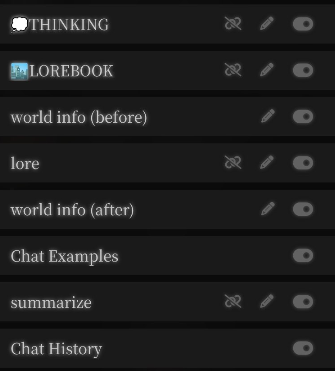
Размышления и получение описания
1. Thinking -размышление по пунктам. Включать для всех поддерживающих СоТ моделей (Gemini, Claude). Отключать для GPT
2. Ниже во вкладке LOREBOOK находится всё описания бота, персоны, лорбука, истории чата. Эти промпты не трогать
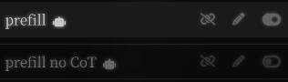
Префилл
Префиллы, обязательно включать только один:
1. prefill - префилл для всех поддерживающих СоТ моделей
2. prefill no CoT - префилл для GPT. Основа префилла взята из Яблочного пресета (https://kykaaj.github.io/yablochny/)
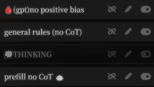
Настройки для GPT
Изначально пресет выставлен под думающие моделию. Для GPT 5.4 включить следующие настройки:
1. (gpt)no positive bias
2. general ruules (no CoT)
3. отключить Thinking
4. включить prefill no CoT и отключить обычный prefill